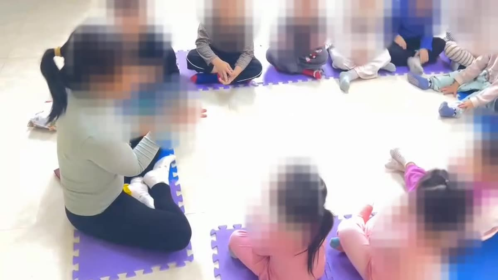

Dành cho HLV
Giao tiếp với trẻ trong lớp yoga: nói sao để con muốn nghe, khen sao để con muốn tập
Để ý tấm ảnh trên một chút. Cô không đứng. Cô cúi xuống, gần như ngồi ngang với bé.
Trong lớp yoga trẻ em, cô thấy giao tiếp không bắt đầu từ lời nói. Nó bắt đầu từ chỗ mình đặt cơ thể mình. Một người lớn đứng cao, nhìn xuống, với một người lớn ngồi xuống, nhìn ngang, nói cùng một câu, các con sẽ nghe ra hai điều khác nhau.
Bài này Sophia chia sẻ những cách giao tiếp cô dùng mỗi ngày với các con, từ phút làm quen đầu tiên tới lúc nói chuyện với bố mẹ sau giờ học. Không có câu thần chú nào. Chỉ có những thói quen nhỏ, lặp lại nhiều lần.
Kết nối trước, hướng dẫn sau
Bác sĩ tâm thần Daniel Siegel và nhà trị liệu Tina Payne Bryson có một nguyên tắc ngắn gọn: kết nối rồi mới chuyển hướng (The Whole-Brain Child, 2011). Khi một em bé đang buồn, đang sợ hay đang giận, phần não biết nghe lời giải thích tạm thời “đóng cửa”. Mình phải làm con thấy an toàn trước, rồi lời hướng dẫn mới vào được.
Ở lớp, kết nối là những việc rất nhỏ. Gọi tên con. Ngồi xuống ngang tầm mắt. Mỉm cười trước khi nói. Chạm tay chào ở cửa lớp. Những việc này chỉ mất vài giây, nhưng các con nhớ rất lâu.
Trước một tình huống khó, việc đầu tiên cô làm không phải là nói. Cô thở ba hơi, thở ra dài hơn hít vào. Trẻ nhỏ mượn sự bình tĩnh của người lớn bên cạnh. Thầy cô thử cùng cô:
🫁 Ba hơi thở trước khi nói
Phút làm quen đầu tiên
Buổi đầu, nhiều bé nép sau lưng mẹ hoặc đứng ở cửa nhìn vào. Cô không giục. Một câu hỏi vui, một đồ vật lạ, một trò chơi nhỏ, thường mở cửa nhanh hơn mười lời mời. Bấm thử hộp bên dưới để bốc một câu mở đầu cô hay dùng.
🎁 Hộp câu mở đầu
Mỗi lần bấm là một câu. Chọn câu hợp với tuổi và tính cách của bé.
Bấm nút để bốc một câu 👇
- Hôm nay con đến đây bằng gì? Đi bộ, xe máy, hay… tên lửa?
- Con thích con vật nào nhất? Mình thử biến thành con vật đó nhé.
- Cô có một chiếc chuông biết hát. Con muốn nghe nó hát không?
- Bàn tay con hôm nay ấm hay lạnh? Mình xoa vào nhau thử xem.
- Con có muốn chọn màu thảm cho mình không?
- Cô đang tìm một bạn giúp cô giữ chú gấu bông này. Ai giúp cô được?
- Con thổi thử quả bóng tưởng tượng này xem, nó to được bằng chừng nào?
- Con đứng một chân được bao lâu? Mình đếm cùng nhau nhé.
- Sáng nay con thấy trong người như trời nắng, trời mưa hay trời có mây?
- Con muốn ngồi cạnh cô hay ngồi cạnh mẹ trước?
Có bé cần cả buổi chỉ để ngồi xem. Cô để thảm của bé gần mình, thỉnh thoảng nhìn sang, mỉm cười. Không ép. Buổi sau, bé thường ngồi gần hơn một chút.
Nói bằng ngôn ngữ của trẻ
Câu ngắn, hình ảnh rõ
“Kéo dài cột sống” là câu của người lớn. “Đầu chạm lên mây” là câu của trẻ. “Hít vào” thành “ngửi bông hoa”, “thở ra” thành “thổi tắt ngọn nến”. Trẻ nhỏ nghĩ bằng hình ảnh, nên một hình ảnh đúng làm thay được cả đoạn giải thích.
Nói điều muốn con làm
Bộ não nhỏ nghe “đừng chạy” thì vẫn còn đọng lại chữ “chạy”. Cô nói “đi chậm như mèo con”, “tay đặt trên đầu gối”, “chân dính trên thảm”. Câu khẳng định cho các con biết phải làm gì, thay vì chỉ biết điều không được làm.
Cho con một lựa chọn nhỏ
“Hôm nay con muốn làm cây táo hay cây dừa?” “Con muốn nằm ngửa hay nằm nghiêng để thư giãn?” Hai lựa chọn, cả hai đều được. Các nhà tâm lý Edward Deci và Richard Ryan cho thấy cảm giác được tự chọn là một trong ba nhu cầu gốc giúp con người muốn làm từ bên trong (Deci và Ryan, 2000). Trẻ con cũng thế. Được chọn một chút, con hợp tác nhiều hơn hẳn.

Nói theo độ tuổi
Cùng một ý, nói với bé ba tuổi và với bạn chín tuổi phải rất khác. Chọn độ tuổi để xem cô thường điều chỉnh thế nào:
🧒 Cách nói theo độ tuổi
Khen đúng cách
Năm 1998, Claudia Mueller và Carol Dweck làm một loạt thí nghiệm với trẻ khoảng mười, mười một tuổi. Những bạn được khen “con thông minh quá” về sau lại ngại chọn bài khó, và khi gặp thất bại thì nản nhanh hơn. Những bạn được khen vì đã cố gắng thì sẵn sàng thử thách hơn, kiên trì hơn (Journal of Personality and Social Psychology). Lời khen không chỉ làm con vui. Nó dạy con nghĩ về bản thân mình.
Trong lớp yoga, cô khen cụ thể điều con làm, khen sự cố gắng, và không so sánh con với bạn. Cô cũng dè dặt với phần thưởng như hình dán, kẹo. Nghiên cứu kinh điển của Lepper và cộng sự (1973) cho thấy khi trẻ được hứa thưởng cho một việc vốn đã thích, sau đó các con lại ít tự làm việc ấy hơn. Cô muốn các con tập vì thấy cơ thể mình dễ chịu, không phải vì miếng dán.
🔁 Đổi một lời khen: chạm để lật thẻ
Mặt trước là câu quen miệng, mặt sau là câu cô thay vào.
Lắng nghe và gọi tên cảm xúc
Khi một bạn nhỏ nói “Con không thích yoga!”, câu đó hiếm khi thật sự là về yoga. Có thể con mệt, con đói, con nhớ mẹ, con vừa giận bạn. Cô ngồi xuống, nhìn con, gọi tên điều con có thể đang cảm thấy: “Hôm nay con không muốn tập. Con thấy mệt à?”
Hai tác giả Adele Faber và Elaine Mazlish viết cả một cuốn sách quanh điều này: khi trẻ được người lớn ghi nhận cảm xúc thay vì gạt đi, các con bình tĩnh lại nhanh hơn và sẵn lòng nghe hơn (How to Talk So Kids Will Listen & Listen So Kids Will Talk, 1980). Siegel gọi đây là “gọi tên để làm dịu”. Gọi đúng tên cảm xúc không có nghĩa là chiều theo mọi việc. Nó chỉ cho con biết: cô hiểu con.
💬 Con nói, cô đáp sao?
Bé khoanh tay: “Con không thích yoga!”
Bé ngã khỏi tư thế cái cây, mếu: “Con không làm được!”
Bé chạy lại mách: “Bạn ấy lấy thảm của con!”
Ngôn ngữ cơ thể và cái chạm
Trẻ nhỏ đọc khuôn mặt người lớn rất giỏi, giỏi hơn đọc lời. Tay mở, vai thả lỏng, ánh mắt ấm, các con thấy được mời gọi. Khoanh tay, đứng chống nạnh, các con thấy bị canh chừng.
Chạm thì cô luôn hỏi trước: “Cô chạm vào lưng con được không?” Có bé thích được ôm. Có bé, nhất là các bé nhạy cảm về giác quan, không muốn ai chạm vào (xem thêm bài yoga cho bé tự kỷ). Con nói không, cô tôn trọng, và chỉ dẫn bằng lời hoặc làm mẫu. Được nói “không” và được tôn trọng cũng là một bài học về cơ thể mà các con mang theo rất lâu.

Những câu cô tránh
Cô tránh so sánh (“bạn kia giỏi hơn”), dọa (“không ngoan cô không cho chơi”), gán nhãn (“con hư”, “con lười”), mỉa mai, và quát. Một nghiên cứu theo dõi gần một nghìn gia đình của Wang và Kenny (Child Development, 2014) cho thấy bố mẹ càng la mắng nặng lời thì các con ở tuổi thiếu niên càng có nhiều vấn đề hành vi và buồn bã hơn, chứ không ít đi.
Trong tám bậc của yoga, giới đầu tiên là không làm hại. Không làm hại không chỉ bằng tay. Lời nói cũng có thể làm đau. Với cô, đứng lớp yoga trẻ em là một cách tự tập giới mỗi ngày: nói thật, nói hiền, và nói ít đi một chút.
Bấm vào từng thẻ để thấy cô đổi những câu dễ buột miệng như thế nào:
Nói chuyện với bố mẹ và cô giáo
Giao tiếp trong nghề dạy trẻ không chỉ có các con. Sau buổi học, cô kể với bố mẹ một điều cụ thể con đã làm được: “Hôm nay con tự gõ chuông và ngồi nghe đến khi tiếng chuông tắt.” Bố mẹ nhớ những câu như thế lâu hơn câu “con ngoan lắm”.
Khi thấy một bé có điều gì đó khác, như rất khó ngồi yên, hay ngã, không nói, hay thở mệt, cô kể lại điều mình quan sát được, nhẹ nhàng, và không đoán bệnh. Người hướng dẫn yoga không phải bác sĩ. Cô có thể gợi ý bố mẹ hỏi thêm bác sĩ nhi hoặc chuyên gia, và vẫn giữ cho con một chỗ vui trên thảm.
Điều các con dạy cô
Có những buổi cô chuẩn bị rất kỹ, câu chuyện rất hay, và các con chỉ nhớ đúng một điều: lúc cô ngồi xuống bên cạnh, hỏi “Con thấy sao?”
Những câu mình nói, các con quên rất nhanh. Cảm giác được lắng nghe thì các con giữ lại.
🌿 Muốn dạy yoga cho trẻ bằng sự kết nối này?
Cách làm quen, giữ sự chú ý, tạo sự tin tưởng với từng bé, cùng câu chuyện, trò chơi và hơi thở: Sophia hướng dẫn kỹ trong khóa Đào tạo Huấn luyện viên Yoga trẻ em 30 giờ (video quay sẵn 3.690.000đ, Zoom trực tiếp 8.000.000đ).
Đọc tiếp: Kỹ năng đứng lớp yoga trẻ em, Tìm lớp dạy đầu tiên sau khóa HLV 30 giờ, yoga cho cảm xúc của bé.
📚 Tài liệu tham khảo
- Siegel DJ, Bryson TP. The Whole-Brain Child. Delacorte Press, 2011.
- Deci EL, Ryan RM. The “what” and “why” of goal pursuits: human needs and the self-determination of behavior. Psychological Inquiry, 2000;11(4):227–268.
- Mueller CM, Dweck CS. Praise for intelligence can undermine children’s motivation and performance. Journal of Personality and Social Psychology, 1998;75(1):33–52.
- Lepper MR, Greene D, Nisbett RE. Undermining children’s intrinsic interest with extrinsic reward. Journal of Personality and Social Psychology, 1973;28(1):129–137.
- Faber A, Mazlish E. How to Talk So Kids Will Listen & Listen So Kids Will Talk. Rawson, Wade, 1980.
- Wang MT, Kenny S. Longitudinal links between fathers’ and mothers’ harsh verbal discipline and adolescents’ conduct problems and depressive symptoms. Child Development, 2014;85(3):908–923.
- Patañjali. Yoga Sutra, chương II, câu 30 đến 36 (ahimsa, satya).